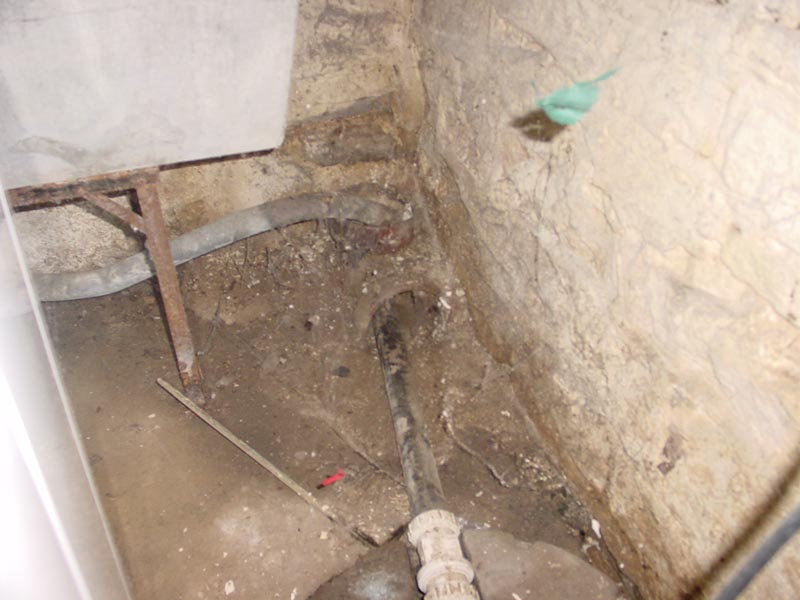

|  |
|
Both the sink and the sump pump drain into an open ended 6-inch-wid cast iron pipe that seems to be embedded in the floor. About what I can figure, it drains out in the front yard about 20 yards away from the house. That would mean that when the house was built, this was a natural way of keeping the absement from filling with water as the pipe travels downhill the whole way. Who knows? [ Back ] |